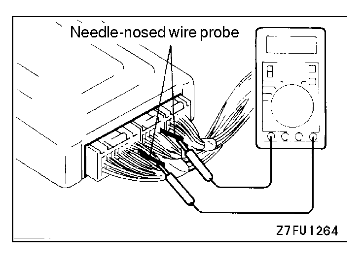

![[Previous]](https://mitsubishitechinfo.com/data/F24S/BUTTONS/fprevg.png)
![[Next]](../../../BUTTONS/fnext.png)

CHECK AT THE ENGINE CONTROL MODULE (ECM)
TERMINAL VOLTAGE CHECK CHART
1.Connect a needle-nosed wire probe (paper clip etc.) to a voltmeter probe.
2.Insert the needle-nosed wire probe into each of the ECM connector terminals from the wire side, and measure the voltage while referring to the check chart.
NOTE
1.Measure voltage with the ECM connectors connected.
2.You may find it convenient to pull out the ECM to make it easier to reach the connector terminals.
3.Checks don't have to be carried out in the order given in the chart.
Caution
Short-circuiting the positive (+) probe between a connector terminal and ground could damage the vehicle wiring, the sensor, ECM, or all three. Use care to prevent this!
3.If voltmeter shows any division from standard value, check the corresponding sensor, actuator and related electrical wiring, then repair or replace.
4.After repair or replacement, recheck with the voltmeter to confirm that the repair has corrected the problem.
ECM Connector Terminal Arrangement
| Terminal No. <2.0L Engine (Turbo)> |
Terminal No. <2.4L Engine> |
Check item | Check condition (Engine condition) | Normal condition | |||||||||||||||||||||||||||||||||||||||||||||||||||||||||||||||||||||||||||
| 1 | 1 | No. 1 injector | •Engine: Warm, idle •Suddenly depress the accelerator pedal. |
From 11 - 14 V mo- mentarily drops slightly |
|||||||||||||||||||||||||||||||||||||||||||||||||||||||||||||||||||||||||||
| 14 | 14 | No. 2 injector | |||||||||||||||||||||||||||||||||||||||||||||||||||||||||||||||||||||||||||||
| 2 | 2 | No. 3 injector | |||||||||||||||||||||||||||||||||||||||||||||||||||||||||||||||||||||||||||||
| 15 | 15 | No. 4 injector | |||||||||||||||||||||||||||||||||||||||||||||||||||||||||||||||||||||||||||||
| 3 | - | Fuel pressure solenoid | Ignition switch: ON | B+ | |||||||||||||||||||||||||||||||||||||||||||||||||||||||||||||||||||||||||||
| Engine: From cranking to idling (Within approx. 2 minutes) |
0 - 3 V ► B+ | ||||||||||||||||||||||||||||||||||||||||||||||||||||||||||||||||||||||||||||||
| 4 | - | Stepper motor coil <A1> | •Engine: Warm, idle •Check immediately after hot re- start |
B+ ↔ 0 - 6 V (repeats) |
|||||||||||||||||||||||||||||||||||||||||||||||||||||||||||||||||||||||||||
| 17 | - | Stepper motor coil <A2> | |||||||||||||||||||||||||||||||||||||||||||||||||||||||||||||||||||||||||||||
| 5 | - | Stepper motor coil <B1> | |||||||||||||||||||||||||||||||||||||||||||||||||||||||||||||||||||||||||||||
| 18 | - | Stepper motor coil <B2> | |||||||||||||||||||||||||||||||||||||||||||||||||||||||||||||||||||||||||||||
| - | 4 | Idle air control motor (Closed) |
Ignition switch: Immediately after turning ON |
2V or more (Momen- tarily) ► 0 - 1 V |
|||||||||||||||||||||||||||||||||||||||||||||||||||||||||||||||||||||||||||
| - | 17 | Idle air control motor (Open) |
Ignition switch: Immediately after turning ON |
4V or more (Momen- tarily) ► 0 - 1 V |
|||||||||||||||||||||||||||||||||||||||||||||||||||||||||||||||||||||||||||
| - | 5 | Idle air control motor valve position sensor No.1 |
Ignition switch: Immediately after turning ON |
1.5 - 4V (Momentarily) ► 0 - 1 V or 4.5 - 5.5 V |
|||||||||||||||||||||||||||||||||||||||||||||||||||||||||||||||||||||||||||
| - | 18 | Idle air control motor valve position sensor No.2 |
Ignition switch: Immediately after turning ON |
1.5 - 4V (Momentarily) ► 0 - 1 V or 4.5 - 5.5 V |
|||||||||||||||||||||||||||||||||||||||||||||||||||||||||||||||||||||||||||
| 6 | 6 | EGR solenoid | Ignition switch: ON | B+ | |||||||||||||||||||||||||||||||||||||||||||||||||||||||||||||||||||||||||||
| •Engine: Idle •Suddenly depress the accelerator pedal. |
From B+, momentarily drops |
||||||||||||||||||||||||||||||||||||||||||||||||||||||||||||||||||||||||||||||
| 7 | 7 | Engine/transaxle general control torque reduction request signal 1 |
Engine: Idle | 4.5 - 5.5 V | |||||||||||||||||||||||||||||||||||||||||||||||||||||||||||||||||||||||||||
| During driving and speed-changing after engine warming up |
0 - 1 V | ||||||||||||||||||||||||||||||||||||||||||||||||||||||||||||||||||||||||||||||
| 8 | - | Fuel pump relay | Ignition switch: ON | B+ | |||||||||||||||||||||||||||||||||||||||||||||||||||||||||||||||||||||||||||
| Engine: Idle | 0 - 3 V | ||||||||||||||||||||||||||||||||||||||||||||||||||||||||||||||||||||||||||||||
| - | 8 | Fuel pump relay module | Ignition switch: ON | 0 - 0.5 V | |||||||||||||||||||||||||||||||||||||||||||||||||||||||||||||||||||||||||||
| Engine: Cranking | 0.7 - 2.8 V | ||||||||||||||||||||||||||||||||||||||||||||||||||||||||||||||||||||||||||||||
| Engine: Idle | |||||||||||||||||||||||||||||||||||||||||||||||||||||||||||||||||||||||||||||||
| 9 | 9 | Evaporative emission purge solenoid |
Ignition switch: ON | B+ | |||||||||||||||||||||||||||||||||||||||||||||||||||||||||||||||||||||||||||
| Engine: Warm, 3,000 r/min | 0 - 3 V | ||||||||||||||||||||||||||||||||||||||||||||||||||||||||||||||||||||||||||||||
| 10 | 10 | Ignition power transistor <A> |
Engine: 3,000 r/min | 0.3 - 3.0 V | |||||||||||||||||||||||||||||||||||||||||||||||||||||||||||||||||||||||||||
| 23 | 23 | Ignition power transistor <B> |
|||||||||||||||||||||||||||||||||||||||||||||||||||||||||||||||||||||||||||||
| 11 | - | Turbocharger waste gate solenoid |
Ignition switch: ON | B+ | |||||||||||||||||||||||||||||||||||||||||||||||||||||||||||||||||||||||||||
| Engine: Idle (When the premium gasoline is used) |
0 - 3 V | ||||||||||||||||||||||||||||||||||||||||||||||||||||||||||||||||||||||||||||||
| 12 | 12 | Power supply | Ignition switch: ON | B+ | |||||||||||||||||||||||||||||||||||||||||||||||||||||||||||||||||||||||||||
| 25 | 25 | ||||||||||||||||||||||||||||||||||||||||||||||||||||||||||||||||||||||||||||||
| 16 | - | Boost meter | Ignition switch: ON | 4 - 13V | |||||||||||||||||||||||||||||||||||||||||||||||||||||||||||||||||||||||||||
| •Engine: Idle •Suddenly depress the accelerator pedal. |
From B+, momentarily drops |
||||||||||||||||||||||||||||||||||||||||||||||||||||||||||||||||||||||||||||||
| 19 | 19 | Volume air flow sensor re- set signal |
Engine: Idle | 0 - 1 V | |||||||||||||||||||||||||||||||||||||||||||||||||||||||||||||||||||||||||||
| Engine: 3,000 r/min | 6 - 9 V | ||||||||||||||||||||||||||||||||||||||||||||||||||||||||||||||||||||||||||||||
| 20 | 20 | Fan motor relay (High) | Radiator fan is not operating [Engine coolant temperature is 90°C (194°F) or less] |
B+ | |||||||||||||||||||||||||||||||||||||||||||||||||||||||||||||||||||||||||||
| Radiator fan is operating at high speed [Engine coolant temperature is 105°C (221°F) or more] |
0 - 3 V | ||||||||||||||||||||||||||||||||||||||||||||||||||||||||||||||||||||||||||||||
| 21 | 21 | Fan motor relay (Low) | Radiator fan is not operating [Engine coolant temperature is 90°C (194°F) or less] |
B+ | |||||||||||||||||||||||||||||||||||||||||||||||||||||||||||||||||||||||||||
| Radiator fan is operating at low speed [Engine coolant temperature is 90 - 105°C (194 - 221°F) or more] |
0 - 3 V | ||||||||||||||||||||||||||||||||||||||||||||||||||||||||||||||||||||||||||||||
| 22 | 22 | A/C compressor clutch relay |
•Engine: Idle •A/C switch: OFF ► ON (A/C com- pressor is operating) |
B+ or momentarily 6 V or more ► 0 - 3 V as A/C clutch cycles |
|||||||||||||||||||||||||||||||||||||||||||||||||||||||||||||||||||||||||||
| 33 | 33 | Generator G terminal | •Engine: idle after warm-up (radia- tor fan: OFF) •Headlight: OFF ► ON •Rear defogger switch: OFF ► ON •Stop lamp: OFF ► ON |
0.2 - 3.5 V, voltage drops |
|||||||||||||||||||||||||||||||||||||||||||||||||||||||||||||||||||||||||||
| 36 | 36 | Check engine/Malfunction indicator lamp |
Ignition switch: OFF ► ON | 0 - 3 V ► 9 - 13 V (after several seconds have passed) |
|||||||||||||||||||||||||||||||||||||||||||||||||||||||||||||||||||||||||||
| 37 | 37 | Power steering pressure switch |
Engine: Warm, idle |
When steering wheel is station- ary |
B+ | ||||||||||||||||||||||||||||||||||||||||||||||||||||||||||||||||||||||||||
| When steering wheel is turned |
0 - 3 V | ||||||||||||||||||||||||||||||||||||||||||||||||||||||||||||||||||||||||||||||
| 38 | 38 | MFI relay (Power supply) | Ignition switch: OFF | B+ | |||||||||||||||||||||||||||||||||||||||||||||||||||||||||||||||||||||||||||
| Ignition switch: ON | 0 - 3 V | ||||||||||||||||||||||||||||||||||||||||||||||||||||||||||||||||||||||||||||||
| 41 | 41 | Generator FR Terminal | •Engine: idle after warm-up (radia- tor fan: OFF) •Headlight: OFF ► ON •Rear defogger switch: OFF ► ON •Stop lamp: OFF ► ON |
0.2 - 3.5 V, voltage drops |
|||||||||||||||||||||||||||||||||||||||||||||||||||||||||||||||||||||||||||
| 42 | 42 | A/C refrigerant intermedi- ate pressure switch |
A/C refrigerant pressure (High- pressure side) |
1,373 kPa (199 psi) or less |
B+ | ||||||||||||||||||||||||||||||||||||||||||||||||||||||||||||||||||||||||||
| 1,863 kPa (270 psi) or more |
0 - 3 V | ||||||||||||||||||||||||||||||||||||||||||||||||||||||||||||||||||||||||||||||
| 43 | 43 | Engine/transaxle general control torque reduction request signal 2 |
Engine: Idle | 0 - 1 V | |||||||||||||||||||||||||||||||||||||||||||||||||||||||||||||||||||||||||||
| During driving and speed-changing after engine warming up |
1 - 5.5 V | ||||||||||||||||||||||||||||||||||||||||||||||||||||||||||||||||||||||||||||||
| 45 | 45 | A/C switch | Engine: Idle | Turn the A/C switch OFF |
0 - 3 V | ||||||||||||||||||||||||||||||||||||||||||||||||||||||||||||||||||||||||||
| Turn the A/C switch ON (A/C compressor is operating) |
B+ | ||||||||||||||||||||||||||||||||||||||||||||||||||||||||||||||||||||||||||||||
| 46 | 46 | Engine/transaxle general control torque execution signal |
Engine: Idle at the coolant tempera- ture of 50°C (122°F) or lower |
0 - 1 V | |||||||||||||||||||||||||||||||||||||||||||||||||||||||||||||||||||||||||||
| Engine: Warm, idle | 1 - 4 V | ||||||||||||||||||||||||||||||||||||||||||||||||||||||||||||||||||||||||||||||
| 54 | 54 | Heated oxygen sensor heater (Rear) |
Engine: Warm, idle | 0 - 3 V | |||||||||||||||||||||||||||||||||||||||||||||||||||||||||||||||||||||||||||
| Engine: 5,000 r/min | B+ | ||||||||||||||||||||||||||||||||||||||||||||||||||||||||||||||||||||||||||||||
| - | 55 | Evaporative emission ventilation solenoid |
Ignition switch: ON | B+ | |||||||||||||||||||||||||||||||||||||||||||||||||||||||||||||||||||||||||||
| After the engine has warmed up, drive the vehicle at a constant speed 88 km/h (55 mph) (OBD-II monitor- ing conditions). |
Momentarily 0 - 3V | ||||||||||||||||||||||||||||||||||||||||||||||||||||||||||||||||||||||||||||||
| 58 | 58 | Engine ignition signal | Engine: 3,000 r/min | 0.3 - 3.0 V | |||||||||||||||||||||||||||||||||||||||||||||||||||||||||||||||||||||||||||
| 60 | 60 | Heated oxygen sensor heater (Front) |
Engine: Warm, idle | 0 - 3 V | |||||||||||||||||||||||||||||||||||||||||||||||||||||||||||||||||||||||||||
| Engine: 5,000 r/min | B+ | ||||||||||||||||||||||||||||||||||||||||||||||||||||||||||||||||||||||||||||||
| - | 61 | Fuel tank differential pres- sure sensor |
Engine: Idle | 1.2 - 3.8 V | |||||||||||||||||||||||||||||||||||||||||||||||||||||||||||||||||||||||||||
| 71 | 71 | Ignition switch-ST | Engine: Cranking | 8V or more | |||||||||||||||||||||||||||||||||||||||||||||||||||||||||||||||||||||||||||
| 72 | 72 | Intake air temperature sensor |
Ignition switch: ON |
When intake air temperature is 0°C (32°F) |
3.2 - 3.8 V | ||||||||||||||||||||||||||||||||||||||||||||||||||||||||||||||||||||||||||
| When intake air temperature is 20°C (68°F) |
2.3 - 2.9 V | ||||||||||||||||||||||||||||||||||||||||||||||||||||||||||||||||||||||||||||||
| When intake air temperature is 40°C (104°F) |
1.5 - 2.1 V | ||||||||||||||||||||||||||||||||||||||||||||||||||||||||||||||||||||||||||||||
| When intake air temperature is 80°C (176°F) |
0.4 - 1.0 V | ||||||||||||||||||||||||||||||||||||||||||||||||||||||||||||||||||||||||||||||
| 73 | 73 | Manifold differential pres- sure sensor |
Engine: Idle | 0.8 - 2.4 V | |||||||||||||||||||||||||||||||||||||||||||||||||||||||||||||||||||||||||||
| •Engine: Idle •Suddenly depress the accelerator pedal |
rises from 0.8 - 2.4 V suddenly |
||||||||||||||||||||||||||||||||||||||||||||||||||||||||||||||||||||||||||||||
| 75 | 75 | Heated oxygen sensor (Rear) |
•Transaxle: 2nd <M/T>, L range <A/T> •Driving with the throttle widely open •Engine: 3,500 r/min or more |
0.6 - 1.0 V | |||||||||||||||||||||||||||||||||||||||||||||||||||||||||||||||||||||||||||
| 76 | 76 | Heated oxygen sensor (Front) |
Engine: Warm, 2,500 r/min (Use a digital-type voltmeter) |
0 ↔ 0.8V (repeats) |
|||||||||||||||||||||||||||||||||||||||||||||||||||||||||||||||||||||||||||
| 80 | 80 | Backup power supply | Ignition switch: OFF | B+ | |||||||||||||||||||||||||||||||||||||||||||||||||||||||||||||||||||||||||||
| 81 | 81 | Sensor impressed voltage | Ignition switch: ON | 4.5 - 5.5 V | |||||||||||||||||||||||||||||||||||||||||||||||||||||||||||||||||||||||||||
| 82 | - | Ignition switch-IG | Ignition switch: ON | B+ | |||||||||||||||||||||||||||||||||||||||||||||||||||||||||||||||||||||||||||
| 83 | 83 | Engine coolant tempera- ture sensor |
Ignition switch: ON |
When engine coolant tempera- ture is 0°C (32°F) |
3.2 - 3.8 V | ||||||||||||||||||||||||||||||||||||||||||||||||||||||||||||||||||||||||||
| When engine coolant tempera- ture is 20°C (68°F) |
2.3 - 2.9 V | ||||||||||||||||||||||||||||||||||||||||||||||||||||||||||||||||||||||||||||||
| When engine coolant tempera- ture is 40°C (104°F) |
1.3 - 1.9 V | ||||||||||||||||||||||||||||||||||||||||||||||||||||||||||||||||||||||||||||||
| When engine coolant tempera- ture is 80°C (176°F) |
0.3 - 0.9 V | ||||||||||||||||||||||||||||||||||||||||||||||||||||||||||||||||||||||||||||||
| 84 | 84 | Throttle position sensor | Ignition switch: ON (Check for smooth voltage increase as throttle valve is moved from idle position to wide open throttle.) |
Idle | 0.3 - 1.0 V | ||||||||||||||||||||||||||||||||||||||||||||||||||||||||||||||||||||||||||
| Wide open throttle valve |
4.5 - 5.5 V | ||||||||||||||||||||||||||||||||||||||||||||||||||||||||||||||||||||||||||||||
| 85 | 85 | Barometric pressure sen- sor |
Ignition switch: ON |
When altitude is 0 m (0 ft.) |
3.7 - 4.3 V | ||||||||||||||||||||||||||||||||||||||||||||||||||||||||||||||||||||||||||
| When altitude is 1,200 m (3937 ft.) |
3.2 - 3.8 V | ||||||||||||||||||||||||||||||||||||||||||||||||||||||||||||||||||||||||||||||
| 86 | 86 | Vehicle speed sensor | •Ignition switch: ON •Move the vehicle slowly forward |
0 ↔ 5 V (repeats) |
|||||||||||||||||||||||||||||||||||||||||||||||||||||||||||||||||||||||||||
| 87 | 87 | Closed throttle position switch |
Ignition switch: ON |
Set throttle valve to idle position |
0 - 1 V | ||||||||||||||||||||||||||||||||||||||||||||||||||||||||||||||||||||||||||
| Slightly open throttle valve |
4 V or more | ||||||||||||||||||||||||||||||||||||||||||||||||||||||||||||||||||||||||||||||
| 88 | 88 | Camshaft position sensor | Engine: Cranking | 0.4 - 3.0 V | |||||||||||||||||||||||||||||||||||||||||||||||||||||||||||||||||||||||||||
| Engine: Idle | 0.5 - 2.0 V | ||||||||||||||||||||||||||||||||||||||||||||||||||||||||||||||||||||||||||||||
| 89 | 89 | Crankshaft position sen- sor |
Engine: Cranking | 0.4 - 4.0 V | |||||||||||||||||||||||||||||||||||||||||||||||||||||||||||||||||||||||||||
| Engine: Idle | 1.5 - 2.5 V | ||||||||||||||||||||||||||||||||||||||||||||||||||||||||||||||||||||||||||||||
| 90 | 90 | Volume air flow sensor | Engine: Idle | 2.2 - 3.2 V | |||||||||||||||||||||||||||||||||||||||||||||||||||||||||||||||||||||||||||
| Engine: 2,500 r/min | |||||||||||||||||||||||||||||||||||||||||||||||||||||||||||||||||||||||||||||||
| 91 | 91 | Park/Neutral position switch <A/T> |
Ignition switch: ON |
Set selector lever to P or N |
0 - 3 V | ||||||||||||||||||||||||||||||||||||||||||||||||||||||||||||||||||||||||||
| Set selector lever to D, 2, L or R |
8 - 14 V | ||||||||||||||||||||||||||||||||||||||||||||||||||||||||||||||||||||||||||||||